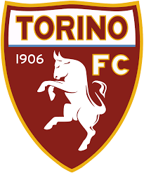

Mazzocchi is a product of Benevento's youth system. Before joining Salernitana, he played for Parma, Perugia, Venezia, and Rimini. In the current season, the Italian has featured in 18 Serie A matches, contributing with one assist. Earlier, we reported that Napoli is close to acquiring Udinese's midfielder and Serbian national Lazar Samardzic. In December, napoli sold midfielder Elif Elmas to RB Leipzig, earning approximately 25 million euros from the transfer. This season, the 28-year-old footballer played 18 matches in the Italian league without scoring a goal. The reputable online portal Transfermarkt estimates Mazzocchi's market value at €4 million. Mazzocchi is a product of the Verona club. He has played for the Salernitana since 2022.

0:3
SSC Napoli lost their third consecutive away Serie A game as Torino beat them 3-0, seeing the defending champions slip to ninth in the table.After a disappointing defeat to Fiorentina last time out, Torino started on the front foot, as Duvan Zapata’s first-time effort from distance was spilt by Pierluigi Gollini inside just five minutes. Nikola Vlasic then wasted a golden opportunity to double his tally for the season by flashing over from close range. Giacomo Raspadori missed Napoli’s best chance of the half by striking straight at Vanja Milinkovic-Savic after a neat passing move.
torino has won against napoli... Starting from 2014 the team of Napoli and the team of Torino played 20 games among which there were 14 victories of Napoli, 4 played in draw. Torino in actual season average scored 1.04 goals per match. In 9 (69.23%) matches played at home was total goals (team and opponent) Over 1.5 goals. In 6 (46.15%) matches in season 2024 played at home was total goals (team and opponent) Over 2.5 goals.